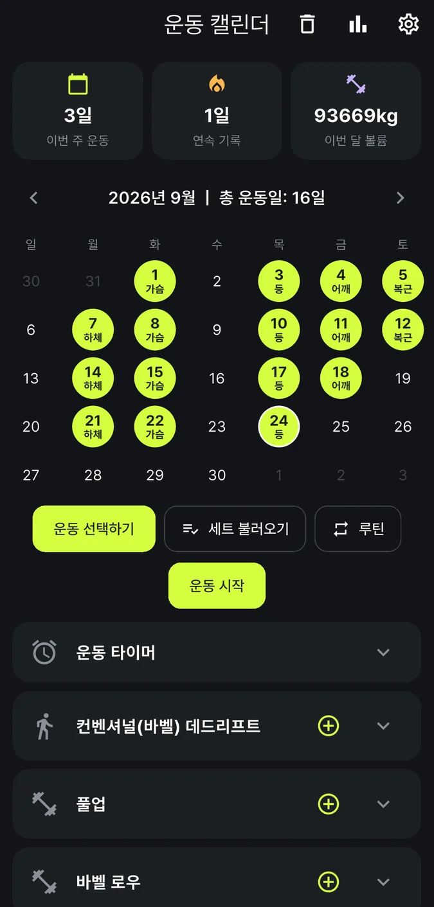
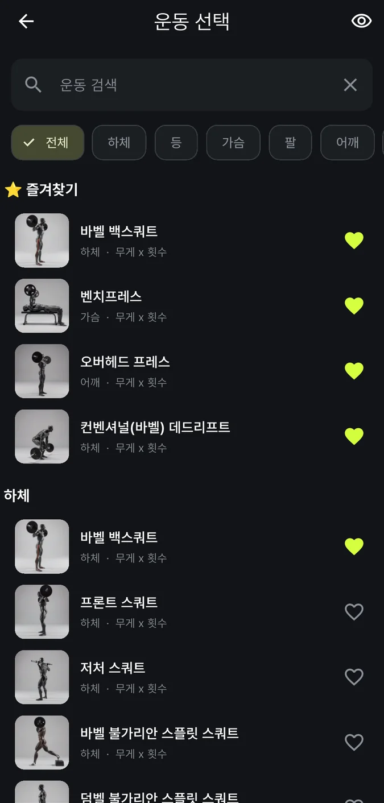
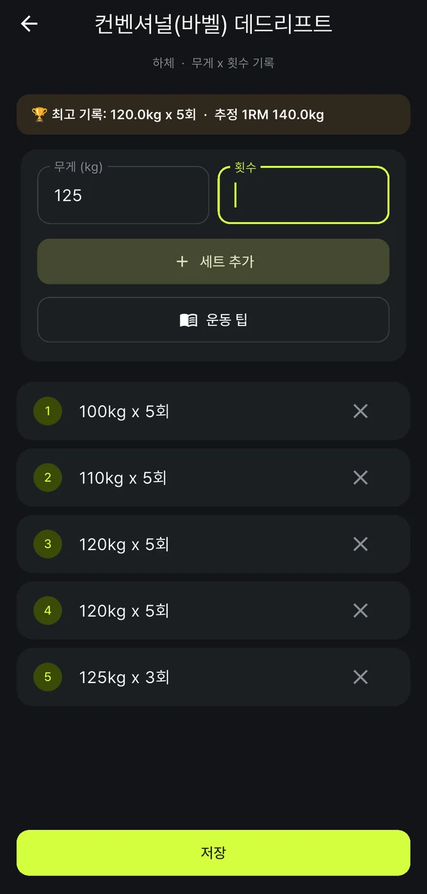
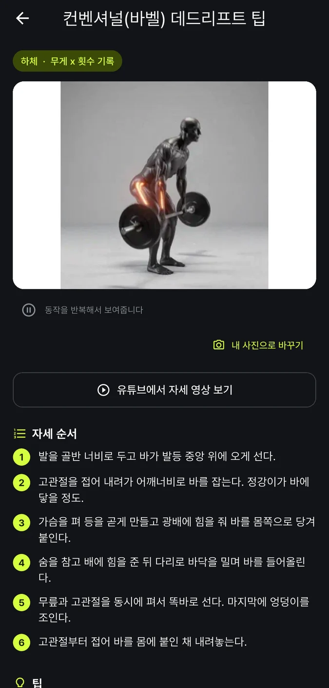
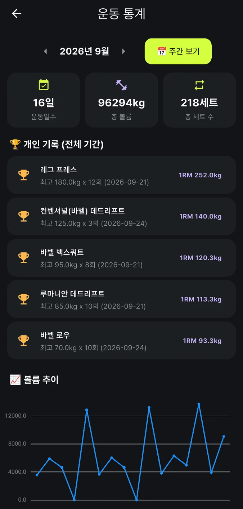
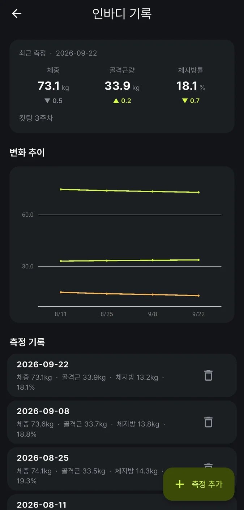

사용방법 안내
운동 플래너 사용방법
363가지 운동을 동작 애니메이션으로 보고, 세트·무게·횟수를 달력에 기록하는 안드로이드 운동 기록 앱이에요.
- 출시 준비 중
- 안드로이드 앱
아직 출시 준비 중이에요. 화면과 기능은 출시 전에 달라질 수 있어요.
앱 정보
- 앱 형태
- 안드로이드 앱
- 지원 버전
- 안드로이드 7.0 이상
- 로그인
- 없어요
- 광고
- 홈·통계·인바디 화면 아래에 배너 1개 (Google AdMob)
- 인터넷 권한
- 있어요 (광고를 불러오는 데 써요. 기록은 휴대폰에만 저장돼요)
- 휴대폰에 표시되는 이름
- 운동플래너
- 상태
- 출시 준비 중
단계별 사용방법
날짜를 고르고, 운동을 찾고, 세트를 기록하는 6단계예요. 스크린샷은 소개용 예시 기록으로 만든 화면이라, 실제 화면의 기록은 사용자마다 달라요. 스크린샷에는 광고 배너가 나오지 않지만, 실제 앱의 홈·통계·인바디 화면 아래에는 광고 배너가 1개 표시돼요.
-
1단계. 달력에서 날짜를 골라요

크게 보기 (새 창)- 앱을 열면 '운동 캘린더'가 보여요. 기록할 날짜를 눌러 주세요. 처음에는 오늘이 선택돼 있어요.
- 운동한 날은 색 원과 그날 많이 한 부위로 표시돼요.
- 날짜를 골랐다면 운동 선택하기를 눌러요.
홈에는 세트 불러오기, 루틴, 운동 시작 버튼도 있어요. 아래 '팁'에서 설명해요.
-
2단계. 운동을 골라요

크게 보기 (새 창)- '운동 선택' 화면에서 '운동 검색'에 이름을 쓰거나, 전체·하체·등·가슴·팔·어깨 같은 부위 칩을 눌러 찾아요.
- 오른쪽 하트를 누르면 즐겨찾기가 되어 맨 위에 모여요.
- 운동 이름을 누르면 기록 화면이 열려요.
-
3단계. 무게와 횟수를 적고 저장해요

크게 보기 (새 창)- '무게 (kg)'와 '횟수'를 넣고 세트 추가를 눌러요.
- 세트마다 반복하면 아래에 목록이 쌓여요. 무게 칸은 그대로 남아 있어서, 같은 무게면 횟수만 다시 쓰면 돼요.
- 끝나면 저장을 눌러요.
- 같은 운동 기록이 있으면 위에 '최고 기록'과 '추정 1RM'이 보여요.
- 달리기·플랭크처럼 시간으로 재는 운동은 '분'·'초' 칸이 나와요.
-
4단계. 자세가 헷갈리면 운동 팁

크게 보기 (새 창)- 기록 화면의 운동 팁을 누르면 동작 애니메이션, '자세 순서', '팁', '이어서 하기 좋은 운동'이 나와요.
- 애니메이션을 누르면 멈췄다가 다시 재생돼요.
- 유튜브에서 자세 영상 보기는 휴대폰의 유튜브 앱이나 브라우저를 열어요.
- 내 사진으로 바꾸기로 내가 쓰는 기구 사진을 넣을 수도 있어요.
-
5단계. 통계로 내 기록을 확인해요

크게 보기 (새 창)- 홈 오른쪽 위 막대그래프 아이콘을 눌러 '운동 통계'를 열어요.
- 주간 보기와 월간 보기를 바꿔 가며 운동일수·총 볼륨·총 세트 수를 봐요.
- 개인 기록과 볼륨 추이 그래프도 볼 수 있어요.
-
6단계. 인바디도 함께 기록해요

크게 보기 (새 창)- 홈 오른쪽 위 톱니바퀴를 눌러 '설정'으로 가고, '인바디 기록'을 열어요.
- 측정 추가를 누르고 체중(꼭 필요)과 골격근량, 체지방량 또는 체지방률(선택)을 적어요.
- 두 번 이상 기록하면 변화 그래프가 나와요. 그래프에는 체중·골격근량·체지방량(kg)이 그려져요.
체지방률(%)은 맨 위 '최근 측정' 카드와 '측정 기록' 목록에서 볼 수 있어요.
이런 걸 할 수 있어요
운동 플래너에서 할 수 있는 일이에요.
운동 달력
달력에 운동한 날과 그날 세트가 가장 많은 부위(가슴·등·하체 등)가 표시돼요. 위쪽 카드 3개에서 이번 주 운동일·연속 기록·이번 달 볼륨을 봐요.
363가지 운동
부위는 8개예요(하체 118, 등 61, 가슴 37, 팔 30, 어깨 39, 복근 40, 유산소 14, 기타 24). 검색, 부위 칩, 즐겨찾기(하트), 숨기기를 쓸 수 있어요.
동작 애니메이션
기본 363가지 모두에 동작 애니메이션이 연결돼 있어요. 자세 순서와 팁도 363가지 전부 적혀 있어요.
운동마다 다른 입력 칸
무게 x 횟수(257종), 횟수만(74종), 맨몸 횟수+보조중량(7종), 시간(24종), 무게+시간(1종)이에요.
최고 기록과 추정 1RM
무게 x 횟수 운동은 기록 화면 위에 '최고 기록'과 '추정 1RM'이 나와요. 추정 1RM은 무게 x (1 + 횟수/30) 공식이고, 1회면 무게 그대로예요.
세트 불러오기
기본 구성 4개가 들어 있고, 내 구성을 새로 만들 수 있어요. 세트 칩을 차례로 눌러 한 세트씩 체크해요.
루틴
어떤 날의 기록(무게 포함)을 이름 붙여 저장해 두고, 다른 날에 한 번에 추가해요.
운동 타이머
운동 시작으로 운동 시간을 재요. 알림 권한을 허용했다면 진행 중에 알림에 '운동 중'이 뜨고, 알림의 타이머 종료로도 끝낼 수 있어요. 알림이 없어도 홈의 버튼으로 끝낼 수 있어요. 최대 2시간 30분이에요.
운동 통계
주간/월간으로 운동일수·총 볼륨·총 세트 수를 보고, 개인 기록(추정 1RM 상위 5개), 볼륨 추이 그래프, 3대 운동 차트, 운동별 상세 통계 표, 유산소·운동 타이머 시간을 봐요.
인바디 기록
체중·골격근량·체지방량(또는 체지방률)을 기록하고, 직전 측정 대비 변화(▲▼)와 변화 추이 그래프를 봐요.
운동 알림
요일(월~일)과 시간을 골라 매주 반복 운동 알림을 예약해요.
백업과 복원
파일로 저장, 백업 공유하기, 복원하기로 기록을 옮기거나 보관해요.
테마 4가지
다크 애슬레틱(기본), 라이트 애슬레틱, 클린 소프트, 웜 에너지예요.
내 운동, 내 사진
목록에 없는 운동을 직접 추가하고, 동작 이미지를 내 사진(두 장) 또는 GIF 파일로 바꿀 수 있어요. 유튜브에서 자세 영상 보기는 휴대폰의 유튜브 앱이나 브라우저로 넘어가요.
알아 두면 좋은 팁
알아 두면 편한 내용을 모았어요.
-
기록
지난 날 운동도 기록해요
달력에서 그 날짜를 먼저 누른 뒤 운동 선택하기를 누르면 그 날짜로 저장돼요.
-
기록
세트 고치기와 지우기
홈 아래 목록에서 운동 카드의 + 아이콘을 누르면 같은 운동에 세트를 더 넣을 수 있어요.
세트 줄을 누르면 '세트 수정' 창이 열리고, 줄 오른쪽 휴지통은 그 세트를 지워요.
오른쪽 위 휴지통('기록 삭제')은 선택한 날짜의 기록을 모두 지워요. 먼저 확인 창이 떠요.
-
운동 목록
즐겨찾기와 숨기기
하트는 즐겨찾기예요. 운동 이름을 길게 누르면 '이 목록에서 숨기기'가 나오고, 직접 만든 운동이면 '이름 수정'과 '삭제'도 나와요.
오른쪽 위 눈 아이콘으로 숨긴 운동을 다시 볼 수 있어요.
-
운동 목록
목록에 없는 운동 추가
부위 맨 아래의 '○○에 운동 추가' 버튼으로 넣어요(예: 하체에 운동 추가). 이름은 20자까지예요.
직접 만든 운동의 입력 칸은 '무게 x 횟수'로 정해져요.
-
세트
세트 불러오기로 한 세트씩 체크해요
세트 불러오기를 누르면 기본 구성 4개가 보여요(가슴·삼두·어깨 / 등·이두·후면 어깨 / 하체·엉덩이·복근 / 어깨·팔).
구성을 누르고 '1세트', '2세트' 칩을 차례로 눌러 무게와 횟수를 적은 뒤 완료를 눌러요. 목표 세트를 다 채우면 세트 추가로 더 할 수 있어요.
새로 만들기로 내 구성을 만들 수 있어요(세트 수 1~20, 최소·최대 목표 횟수). 기본 구성으로 되돌리기도 있어요.
-
세트
루틴으로 하루 기록을 통째로 저장해요
운동을 기록한 날짜를 고르고 루틴을 눌러요. 아래의 '날짜 기록을 루틴으로' 버튼(예: 9/24 기록을 루틴으로)을 누르고 이름을 적어 저장해요.
다른 날 루틴에서 저장한 루틴을 누르고 추가를 누르면 그 날 기록에 한꺼번에 더해져요.
루틴에는 무게까지 저장되고 운동 타이머 기록은 빠져요. 세트 불러오기의 구성은 무게 없이 목표 세트·횟수만 담아요.
-
타이머
운동 타이머
홈의 운동 시작을 누르면 시작돼요. 버튼이 'mm:ss 운동 종료'로 바뀌고, 알림 권한을 허용했다면 진행 중에 알림에 '운동 중'과 타이머 종료 버튼이 떠요.
안드로이드 13 이상에서 새로 설치했다면 알림 권한을 허용하기 전까지 이 알림이 안 보일 수 있어요. 권한은 설정의 '알림 예약'에서 알림 예약하기를 눌렀을 때 물어보고, 운동 타이머를 시작할 때는 따로 묻지 않아요. 알림이 없어도 타이머는 그대로 돌아가고 홈의 '운동 종료' 버튼으로 끝낼 수 있어요. 알림이 계속 안 보이면 기기 설정에서 이 앱의 알림을 켜 주세요.
끝내면 그 날 기록에 '운동 타이머'로 시간이 저장돼요. 같은 날 여러 번 하면 시간이 합쳐져요.
끝나면 축하 창이 뜨고 5초 뒤 저절로 닫혀요.
-
알림
운동 알림 예약
설정의 '알림 예약'에서 정해요. 시간(처음 값은 8:00)을 고르고 월~일 요일 칩을 누른 뒤 알림 예약하기를 눌러요.
알림 문구는 '운동할 시간이에요! 준비되셨나요?'예요. 예약한 알림은 설정 삭제로 지워요.
알림 시각은 서울(Asia/Seoul) 시간대로 고정돼 있어요.
-
백업
백업과 새 휴대폰으로 옮기기
설정의 '데이터 관리'에 있어요. 파일로 저장은 저장 위치를 직접 고르고(파일 이름 workout_backup_날짜.json), 백업 공유하기는 카카오톡·드라이브 등으로 보내요. 새 휴대폰에서는 복원하기로 파일을 골라요.
백업에는 운동 기록·루틴·세트 구성·인바디 기록·직접 추가한 운동·즐겨찾기·숨긴 운동이 들어가요.
테마, 내 체중, 알림 예약, 내가 넣은 동작 사진은 들어가지 않아요.
-
설정
테마 바꾸기
설정의 '테마 스타일'에서 바꿔요. 다크 애슬레틱(처음 값, 어두운 배경+라임), 라이트 애슬레틱, 클린 소프트, 웜 에너지 중에서 골라요.
-
설정
내 체중 입력
설정의 '내 체중 (kg)'에 숫자를 쓰고 오른쪽 저장 아이콘을 눌러야 저장돼요.
풀업·딥스 같은 맨몸 운동의 볼륨을 (체중 - 보조중량) x 횟수로 계산할 때 써요. 체중을 안 넣으면 맨몸 운동 볼륨은 0으로 잡혀요.
인바디를 기록하면 가장 최근 체중으로 자동으로 맞춰져요.
-
인바디
인바디 입력 요령
체지방량과 체지방률 중 하나만 넣어도 나머지를 계산해 줘요. 같은 날짜를 다시 기록하면 덮어써요.
맨 위 '최근 측정' 카드에는 직전 측정과의 차이(▲▼)가 나와요.
목록 항목을 누르면 수정, 휴지통을 누르면 삭제(확인 창)예요.
-
동작 이미지
동작 이미지를 내 사진으로
내 사진으로 바꾸기를 누르고 사진 찍기나 갤러리에서 고르기로 시작 자세와 끝 자세 두 장을 넣어요. GIF 파일 넣기로 파일 하나를 골라도 돼요.
직접 만든 운동은 동작 사진 직접 넣기 버튼이 보여요.
-
홈
오랜만에 켜면
마지막 운동 후 2일 이상 지난 뒤 앱을 켜면 '마지막 운동으로부터 N일이 지났어요!' 안내창이 떠요. 확인을 누르면 닫혀요.
자주 묻는 질문
질문을 누르면 답이 펼쳐져요.
회원가입이나 로그인이 필요해요?
아니요. 앱에 로그인·회원가입 화면이 없어요. 개인정보처리방침에도 로그인 없이 쓴다고 적혀 있어요.
인터넷이 꼭 필요해요?
운동을 기록하고 보는 데는 인터넷이 필요 없어요. 앱이 인터넷 권한을 쓰는 곳은 광고를 불러올 때뿐이고, 입력한 기록은 개발자의 서버로 보내지 않아요. 인터넷이 연결돼 있지 않거나 광고를 불러오지 못하면 광고 없이 그대로 쓸 수 있어요. 다만 유튜브에서 자세 영상 보기는 휴대폰의 유튜브 앱이나 브라우저를 열기 때문에, 그때는 인터넷 연결이 필요해요.
광고가 있어요?
네. 홈(달력)·통계·인바디 화면 아래에 Google AdMob 배너 광고가 1개 표시돼요. 세트 기록, 운동 선택, 운동 상세 화면에는 광고가 없어요.
광고를 보여주기 위해 Google이 광고 ID 같은 기기 정보를 처리할 수 있어요. 운동·인바디 기록, 메모, 사진은 광고에 쓰이지 않아요. 앱 안에는 광고를 끄는 메뉴가 없어요. 맞춤 광고는 휴대폰 [설정] > [개인 정보 보호] > [광고]에서 광고 ID를 삭제하거나 재설정해서 줄일 수 있어요. 자세한 내용은 개인정보처리방침의 4~7절에 있어요.
운동은 몇 가지예요?
363가지이고 부위는 8개예요. 하체 118, 등 61, 가슴 37, 팔 30, 어깨 39, 복근 40, 유산소 14, 기타 24가지예요.
모든 운동에 동작 애니메이션이 있어요?
앱에 기본으로 들어 있는 363가지는 모두 동작 애니메이션이 연결돼 있어요. 비슷한 운동끼리 같은 애니메이션을 같이 쓰기도 해요(예: 플랭크와 RKC 플랭크). 직접 추가한 운동에는 기본 애니메이션이 없어서 동작 사진 직접 넣기로 채워요.
테마는 몇 가지예요?
4가지예요. 다크 애슬레틱(처음 값), 라이트 애슬레틱, 클린 소프트, 웜 에너지 중에서 설정에서 골라요.
기록은 어디에 저장돼요?
휴대폰 안에만 저장돼요. 앱을 지우면 휴대폰에 저장된 기록과 사진이 모두 지워진다고 앱 안 개인정보처리방침에 적혀 있어요. 방침은 이 사이트에서도 볼 수 있어요.
휴대폰을 바꾸면 기록을 옮길 수 있어요?
네. 지금 휴대폰에서 설정 > 파일로 저장 또는 백업 공유하기로 파일을 만들고, 새 휴대폰에서 설정 > 복원하기로 그 파일을 골라요. 복원하면 파일에 들어 있던 날짜의 기록은 파일 내용으로 바뀌고, 파일에 없는 날짜는 그대로 남아요. '내 체중', 테마, 알림 예약, 내 사진은 백업에 들어가지 않으니 새 휴대폰에서 다시 정해야 해요.
최고 기록과 추정 1RM은 어떻게 계산해요?
무게 x 횟수로 기록한 세트에서 계산해요. 추정 1RM은 무게 x (1 + 횟수/30)이고, 1회면 무게 그대로예요. 어디까지나 추정값이에요. 맨몸 횟수나 시간으로 기록하는 운동은 최고 기록·개인 기록에 들어가지 않아요.
홈의 '연속 기록'은 어떻게 세요?
오늘부터 하루씩 거슬러 올라가며 기록이 있는 날을 세요. 오늘 기록이 없으면 0일로 보여요. 운동 타이머만 쓴 날도 기록이 있는 날로 세어져요.
풀업·딥스 같은 맨몸 운동의 볼륨은 어떻게 계산돼요?
설정에 저장한 '내 체중'에서 보조중량을 뺀 값에 횟수를 곱해요. 어시스트 머신이나 밴드를 쓰면 '보조중량 (kg)' 칸에 적어요(안 쓰면 비워 둬요). '내 체중'이 없으면 0으로 잡혀요.
인바디 그래프에 체지방률도 나와요?
'변화 추이' 그래프에는 체중, 골격근량, 체지방량(kg) 선이 그려져요. 체지방률(%)은 맨 위 '최근 측정' 카드와 '측정 기록' 목록에서 볼 수 있어요. 그래프는 기록이 2건 이상일 때 나와요.
운동 알림이 정확한 시각에 안 와요.
안드로이드의 '알람 및 리마인더' 권한이 꺼져 있으면 알림이 최대 1시간 정도 늦게 올 수 있다고 앱이 안내해요. 알림 예약하기를 누르면 이 권한을 켜러 갈지 물어봐요(권한 켜기/그냥 예약).
운동 타이머 끄는 걸 잊었어요.
한 번에 최대 2시간 30분까지만 기록돼요. 앱이 켜져 있으면 그 시간에 저절로 끝나고, 앱이 꺼져 있었다면 다시 열 때 정리되며 저장 시간은 2시간 30분으로 잘려요.
앱 안에 결제나 구독이 있어요?
결제 화면이나 구독 기능은 들어 있지 않아요.
어떤 안드로이드 버전에서 쓸 수 있어요?
안드로이드 7.0(API 24) 이상이에요.
의료기기예요?
아니요. 운동 기록을 돕는 앱이에요. 건강에 걱정이 있다면 운동 전에 전문가와 상담하세요.
더 알아보기
궁금한 점이 남았다면 onlyonetech@nate.com 으로 문의해 주세요.